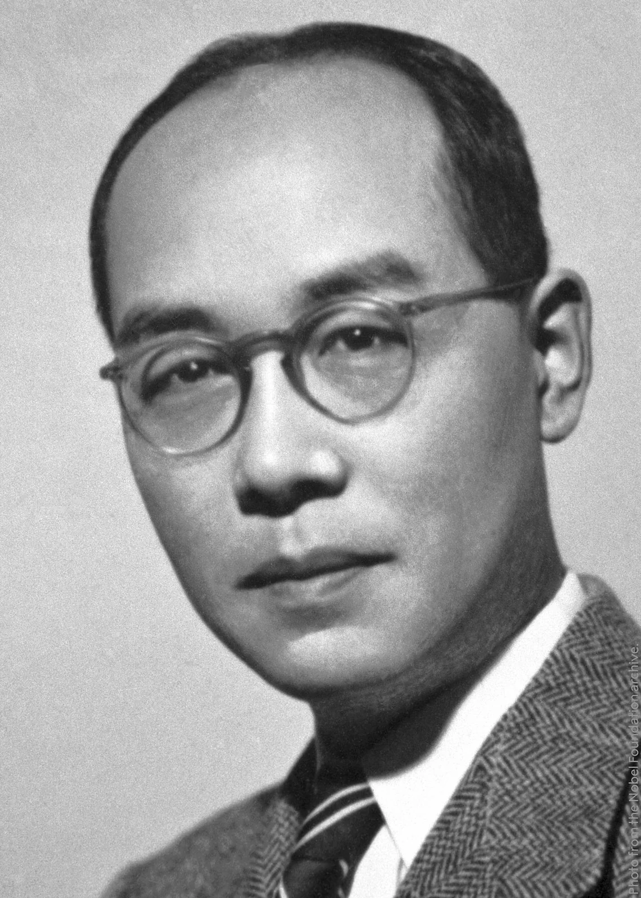
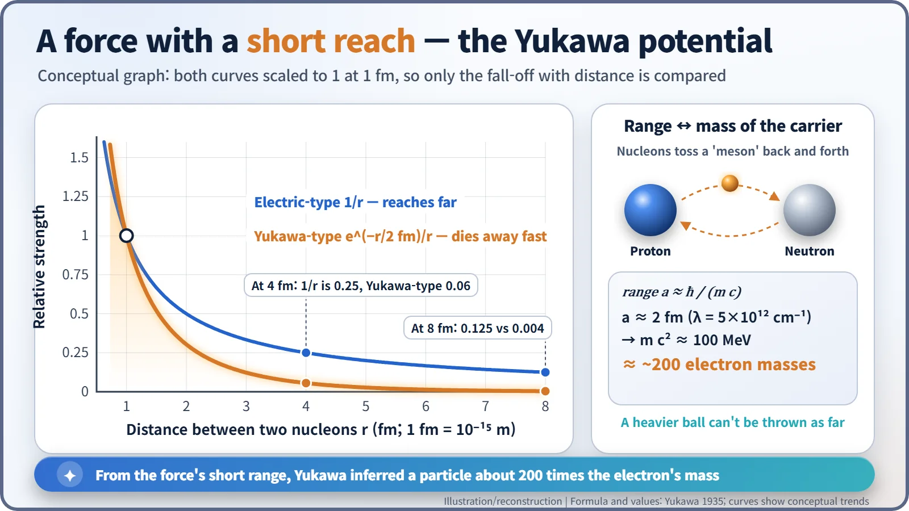
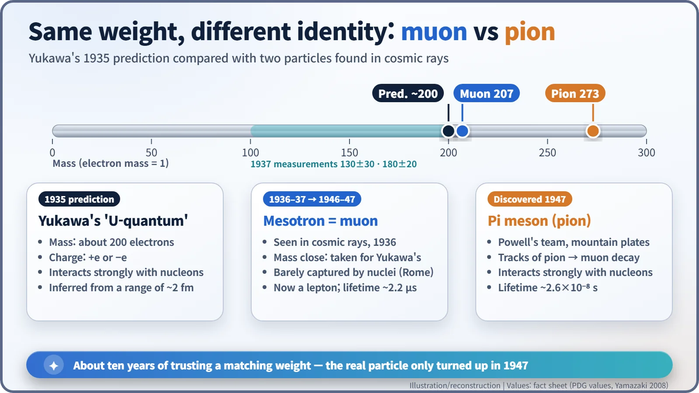
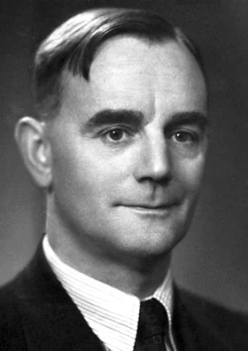

Nuclear History · 056
"This Theory Seems to Be on a Wrong Line" — Yukawa's Meson Theory and the Glue of the Nucleus (1935)
A young Osaka lecturer read the short reach of the nuclear force as the mass of an unseen particle, and physicists then spent a decade chasing the wrong look-alike.
In November 1934 a 27-year-old lecturer at Osaka Imperial University, Hideki Yukawa, proposed that the force holding the atomic nucleus together is carried by a new particle about 200 times heavier than the electron. A cosmic-ray particle found in 1936–37 was mistaken for it for about a decade, until Cecil Powell's team found the real one, the pion, in 1947. Yukawa became Japan's first Nobel laureate in 1949.
A paper that doubted itself
"As such a quantum with large mass and positive or negative charge has never been found by the experiment, the above theory seems to be on a wrong line." — Hideki Yukawa, 1935
It is rare for a theorist to write a sentence like that in the middle of his own paper. It appears in "On the Interaction of Elementary Particles", a ten-page article published in February 1935 in the Proceedings of the Physico-Mathematical Society of Japan (volume 17, page 48). Its author was Hideki Yukawa (1907–1981), a young lecturer at Osaka Imperial University. He predicted a particle nobody had ever seen, openly admitted that experiments had not found it, and then immediately fought back: "We can show, however, that, in the ordinary nuclear transformation, such a quantum can not be emitted into outer space." [1]

Protons repel each other, so why doesn't the nucleus fly apart?
After the neutron was discovered in 1932, physicists settled on a picture of the nucleus as a cluster of protons and neutrons. But that raised an awkward question. Protons all carry positive charge, so they push one another away, and they do it inside a space only about a trillionth of a centimetre across. For the nucleus to hold together, there had to be a far stronger attraction that beats the electric repulsion: the nuclear force.
Werner Heisenberg had suggested an "exchange force" in which protons and neutrons swap something between them, but what exactly was swapped remained a blank. If you followed Enrico Fermi's new theory of beta decay and assumed the nucleons traded an electron and a neutrino, the resulting force was, in Yukawa's words, "much too small to account for the binding energies of neutrons and protons in the nucleus." And the nuclear force had another odd feature: it is enormously strong at very close range, yet almost vanishes as soon as the particles move slightly apart. [1]
Two players and a ball
Yukawa's idea went like this. The electric force can be described as the exchange of photons, the particles of light. So perhaps the nuclear force is the exchange of some new particle. Picture two tennis players in a long rally: as long as the ball keeps flying between them, they are tied to each other and cannot wander off.
The key was the weight of the ball. A photon has no mass, so it can travel any distance, and the electric force reaches far. A heavy ball, on the other hand, cannot be thrown very far. Yukawa proposed that the nuclear force does not fall off gently like the Coulomb form 1/r, but dies away much faster, like e−λr/r. The distance scale 1/λ, the force's range, is set by the mass of the particle being exchanged. He took λ = 5 × 1012 per centimetre, a range of about 2 × 10−13 cm, or 2 femtometres. Working backwards, he obtained a particle mass "2 × 102 times as large as the electron mass", about 200 electron masses. Heavier than an electron, lighter than a proton: something in the middle. That is why it later came to be called a meson, from the Greek for "middle". [1]

Yukawa first presented the idea at a meeting of the Physico-Mathematical Society of Japan on 17 November 1934, when he was 27. He had help along the way. In 1933 his former Kyoto classmate Sin-Itiro Tomonaga had written to him with a fit of proton–neutron data using exactly this e−λr/r form, and Yukawa thanked him in a footnote of the 1935 paper. Yukawa's leap was to read the number λ as the mass of a new particle. [2] [5]
A decade of mistaken identity
At first the prediction seemed to come true remarkably quickly. In 1936 Carl Anderson and Seth Neddermeyer at Caltech found particles in cosmic rays, the high-energy particles that rain down on Earth from space, that were heavier than electrons but lighter than protons; their paper appeared in 1937. That year, J. C. Street and E. C. Stevenson in the United States measured the mass at 130 ± 30 electron masses, and Yoshio Nishina's group in Japan at 180 ± 20. Many physicists, Niels Bohr among them, took this to be Yukawa's particle, and it was named the "mesotron". [2] [6]
Something did not fit, though. A particle that carries the nuclear force should be swallowed by an atomic nucleus almost as soon as it touches one. This particle slipped through matter far too easily. The decisive blow came from Rome just after the Second World War. In a 1946 experiment (published in 1947), Marcello Conversi, Ettore Pancini and Oreste Piccioni showed that the negatively charged particles were not readily captured by nuclei; they simply decayed. The weight matched, but the personality did not. Today we call this particle the muon: a heavier cousin of the electron, about 207 times its mass. [6]

The real particle turned up in 1947. Cecil F. Powell (1903–1969) and his team at the University of Bristol carried stacks of photographic plates up to high mountain sites, the Pic du Midi in the Pyrenees and Chacaltaya in the Andes, and let cosmic rays pass through them. Once developed, the plates showed tracks in which a heavier particle came to a stop and a muon set off from the very same spot. In May 1947 the team (César Lattes, Hugh Muirhead, Giuseppe Occhialini and Powell) reported it in Nature. This was the pi meson, or pion: by today's measurements about 273 electron masses, and strongly interacting with protons and neutrons. It was Yukawa's particle at last. [3] [7]

Japan's first Nobel Prize, and the road to fission
In 1949 Yukawa received the Nobel Prize in Physics "for his prediction of the existence of mesons on the basis of theoretical work on nuclear forces". He was the first Japanese Nobel laureate. The following year Powell received the physics prize for his photographic method and the meson discoveries made with it. Yukawa's estimate of 200 did not hit the measured 273 exactly, but for a rough calculation it was well within reach of the target. [4] [5]
Today, the deepest explanation of the strong force is given in terms of quarks and gluons. Even so, the longer-range part of the force between nucleons is still well described by pion exchange, and Yukawa's core insight, that the heavier the exchanged particle the shorter the reach of the force, has become part of the basic grammar of particle physics.
His picture matters for nuclear energy, too. The nuclear force is a "short arm" that grips only immediate neighbours, while the electric repulsion between protons is a "long arm" that stretches across the whole nucleus. In a nucleus as big as uranium, the long arm's push almost matches the short arm's grip. A few years later, when physicists compared the nucleus to a wobbling liquid drop and explained how that drop could split in two (nuclear fission), this tug-of-war was the foundation underneath.